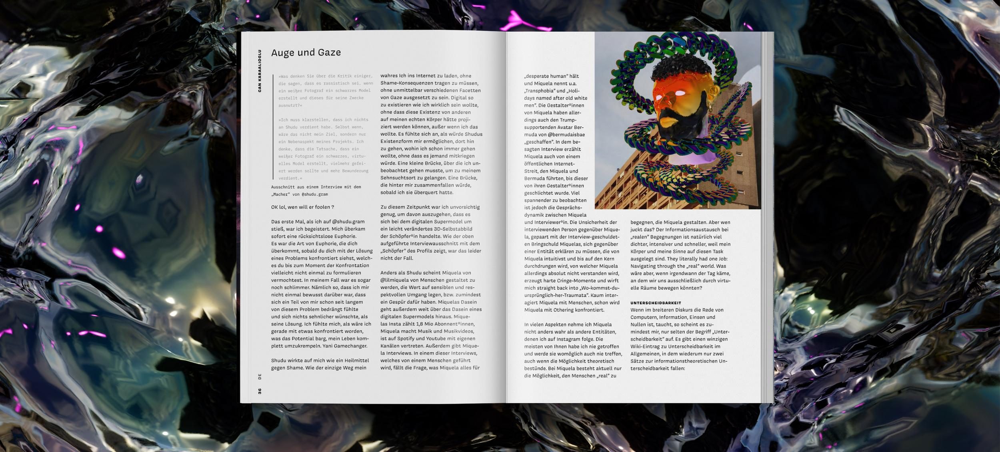
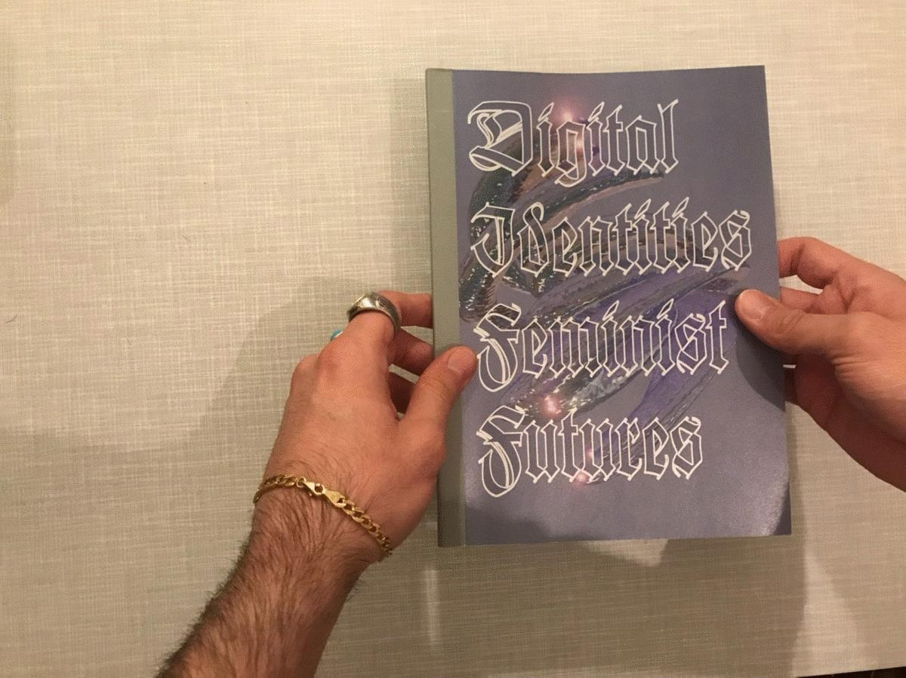

- 
-

- 
-

Comprende la relación analítica entre el contenido del paper Design Justice combinado con la discusión del fanzine Digital Identities Feminist Futures.
Investigadore y diseñadore trans femme no binaria (elle o ella) que trabaja para lograr una liberación colectiva y una ecología sostenible. Nació en Estados Unidos y estudió Música, Tecnología y Cultura en la Universidad de Harvard, luego hizo una maestría en Comunicaciones en la Universidad de Pensilvania y, por último, un doctorado en Comunicación en la Universidad del sur de California. Sus áreas de interés son periodismo, estudios de diseño, estudios de movimientos sociales, métodos participativos de investigación y diseño, política de información y comunicaciones, tecnología de interés público. Actualmente, Sasha es miembre del Comité de la Red de Justicia en Diseño.
Con un foco en movimientos sociales en las redes, medios de comunicación como herramientas para comunidades en lucha, y justicia en procesos de diseño, hace charlas y diferentes escritos.
Es una diseñadora de interacción, artista e investigadora en diseño de Inteligencia Artificial con sede en Berlín. Igualmente, es directora de proyectos en la creación de políticas tecnológicas con una perspectiva feminista interseccional, y es cofundadora de la plataforma de investigación, defensa y arte de IA Dreaming Beyond AI.
Ella busca desmantelar estructuras opresivas y discriminatorias en base a las tecnologías digitales, la justicia social y la inteligencia artificial. Así, se enfoca en la implementación de prácticas interseccionales para transformar el sistema educativo y crear métodos de aprendizaje innovadores en la interacción de la tecnología, el arte y el diseño.
Es un ingeniero de automatización que actualmente se encuentra en una investigación de realidad virtual. Su arte se focaliza en tecnologías discriminatorias y opresivas mediante la interseccionalidad, así como también en la manera que la tecnología impacta en las identidades y en la cultura digital.
Es un diseñador independiente con sede en Berlín. Tiene un enfoque de diseño integral en base de productos y servicios centrados en el usuario.

El artículo ganador del 2021 PROSE Award Winner, Engineering & Technology Category, invita a repensar el diseño y las nuevas tecnologías, enfocándose en las comunidades marginalizadas y oprimidas, a través de un análisis crítico, prácticas inclusivas, e implementación de cambios para desmantelar la desigualdad estructural del poder y privilegios.
Para esto, le autore del paper relata su experiencia como persona no binaria, transgénero y femenina, con ejemplos de malas situaciones al interactuar con la sociedad y sistemas. Demostrando como un mundo desarrollado solamente para las personas cis género, afecta la vida diaria de la comunidad no binaria.
Con esto plantea la necesidad de terminar con la matriz de dominación presente en la sociedad, mediante la implementación de un enfoque de interseccionalidad en el diseño e inteligencia artificial, para construir un mejor mundo en que todos los grupos se vean representados y puedan ser partícipes sin problemas.
Es un zine con representaciones digitales, ilustraciones, fotografías, entre otros recursos, que busca crear un discurso acerca de la influencia que tiene la tecnología en nuestras identidades y cómo estas cambian a través de lo digital. Este tema es abordado desde el punto de vista y pensamientos de personas alejadas de los márgenes trazados por el patriarcado, el racismo y el capitalismo. Esto es relevante actualmente ya que las tecnologías están en constante evolución y es importante cuestionarse la manera en que estos sistemas se usan de manera discriminatoria para así en un futuro proponer ideas tomando en cuentas el feminismo y la interseccionalidad.
Lo que plantea Sasha Constanza Chock en “Design Justice” acerca de una visión del diseño que incluya en su ideación y formalización a aquellos grupos de personas marginalizadas, se refleja en el proyecto del zine. En este, también se aborda el punto de vista de personas que han sido oprimidas y puestas al margen por sistemas que están programados para perpetuar ciertas discriminaciones que no son visibles para todos, sobre todo para personas más privilegiadas. Tanto el paper como el zine, buscan dar visibilidad a este tipo de discriminaciones que están siendo sistematizadas hasta en las más mínimas interacciones y diseños, para así dar cuenta de que el diseño es una herramienta muchas veces pensada solo para algunos, buscando así generar conciencia acerca de esto para que en los proyectos se tomen en cuenta temas como el feminismo, interseccionalidad, género, equidad etc. De igual manera, se aborda el tema de la tecnología y cómo está influye en la vida de las personas y en todos estos procesos de diseño en los cuales se siguen programando estas discriminaciones y diferentes estereotipos.
Para finalizar, con relación al diseño, se refleja una mirada más crítica y enfocada hacia un diseño inclusivo y honesto. Un diseño que une y no segrega, un diseño que no se adueña de datos personales, que es transparente y que no se rige por normas, valores y suposiciones. Todo diseño tiene una política que lo guía y se debe intentar que esta sea la más integral posible.
En temas de cultura se puede ver un foco hacia la unión y la inclusividad. En contra de la colonización digital, de catalogar a personas como “diferentes” y de formar un diseño en el que todos se puedan identificar.
Por otro lado, en el área de conocimiento se explora todo aquello que no se conoce del futuro diseño de las tecnologías y se reevalúa todo aquello que creemos conocer. Un ejemplo actual de esto es, como se da en Design Justice, el sistema de seguridad en los aeropuertos. En esto se reevalúa todo aquello que no está en sintonía con un diseño de datos inclusivo y completo. Aparte, se exploran diferentes especulaciones y orientaciones posibles que se le pueden otorgar a ciertos dispositivos y sistemas, y cómo estos afectan a la sociedad actual e incluso cómo afectarán a la sociedad futura. En el fanzine se ve esto en una de las conclusiones que dice: “(...) corporaciones intentarán tomar ventaja de nosotros y ejercer sus propios sistemas de control (...)”. Esto haciendo referencia a cómo serán manipulados los datos en un futuro.